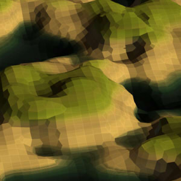

To program a self-driving car, we need more than just a point cloud of its surroundings; to plan paths and obey rules, we need to know about the road, lanes, signs, pedestrians, other cars, and more. But information like this can only be had by imposing knowledge of our world and society into our algorithms that are, otherwise, oblivious to these concepts. This does, however, lead to a dilemma of how to represent all these objects and concepts in a computer program! Signed distance functions have been popular in computer graphics, and can possibly be a good tool for computer vision as well; in this paper I look at how.
Fitting 3D models to 3D reconstructions
While the above research looked at how to represent objects, that is only part of the job; to make use of it, we need to recognize these objects from sensor measurements: like color imagery, or depth data. In my master thesis I look at ways in which you can recover the 3D pose of objects, with the above representation, from color images and point clouds.
Projects
roboticsAscend NTNU
I helped start a robotics team at our university NTNU in 2015. Our common goal each year is to compete in the international aerial robotics competition (IARC), where student teams from universities around the world build drones that push the state of the art in technology. As a member in 2016 and 2017, we competed in the seventh mission, where the challenge is to herd independently moving roombas from one side to another in a 20x20m arena. Everything must be done autonomously by the drone - i.e. with the push of a single 'start' button - without GPS or external motion tracking systems.
computer visionTracking robot vacuum cleaners
The seventh IARC challenge is to build a drone to herd 10 iRoomba vacuum cleaner robots across a 20m x 20m arena. The robots have sensors that the drone must physically touch, in order to affect their semi-random motion. But doing this assumes that you know where they are relative to the drone. With external sensing, like beacons or wall cameras, being banned, your only option is to spot them from the drone itself. I worked on the detection and tracking algorithm that we used to steer our drone in real-time and precisely interact with the robots.
computer visionInside-out position tracking
A key step in overcoming the seventh IARC mission hinges on your drone's ability to know where it is in the arena - knowing that you're above a roomba is not useful, unless you also know where you are. The arena is patterned with a white grid of 1x1m tiles, that you can use for navigation, and a green edge indicating the herding line. Unfortunately, the arena is otherwise free to vary, and can have all sorts of distractions both inside and outside the grid, like sports markings, people or protection nets.
toolsAI simulation and debugging tool for IARC
This is one of my favorite projects, because I got to make a tool that was actually useful to many people. I originally tried out gazebo, as it gives you precise physics; but found their API too limiting and difficult to maneuver. So I built a tool that simulated only what was needed, for the members in our AI group to test and debug their algorithms in a simulated mission scenario. I also added features like scrubbing back or forward in time, seeing a list of sent commands, robot status, recording video, etc., with the help of ImGui.
toolsMission status viewer
Our robotics team built an autonomous drone that can fly along paths inside, without GPS or any external tracking system - only inside-out tracking. With all the things that can go wrong, it's important to have their status available in one place. This GUI tool gives us a live video feed from on-board cameras, lets us draw flight paths, see position state estimates, see commanded velocity and detected obstacles, reset the Kalman filter, and even see CPU load and temperatures. (But the best feature is the drone's tiny animated propellers.)
computer graphicsCurl noise particles
One of my first jobs as an intern was to make a demo that used compute shaders. I went through a couple of prototypes that were too slow, or didn't have the look I wanted: among them a fluid simulator and a dynamic voxelized cloud renderer. I then discovered a paper on soft shadowed particles that looked good, but lacked exciting behaviour or interactivity. The final demo is built with that rendering style, but uses curl noise, which is a nice way to fake fluid dynamics, and also uses some tricks to add object collision.
computer graphicsImplicit surfaces with geometry shaders

Implicit surfaces are much cooler than triangle meshes, because you can very quickly describe interesting surfaces procedurally, in code, with just simple maths - no modelling skills needed! These surfaces can even be animated in ways that would be much harder with meshes. On the other hand, rendering them is trickier, because you don't have an explicit list over all the surface points; instead, you can only check a given point is on the surface or not. How can we generate a triangle mesh that OpenGL can render? and how can we do it at 60 fps on a mobile GPU?
computer graphicsFRAKTAL
I built this tool to render signed distance function scenes under my favorite type of diffuse lighting. The scene is defined in a shader file that can be reloaded on the fly. Rendering is done with path tracing on the GPU, and can be refined by letting it run longer. Despite being a hobby project, I got a chance to use it heavily for my master thesis, three years after initially building it.